Bring it in
Start with your shoot.
Use Card Manager to review and copy memory cards to your chosen destinations. Open folders of RAW photos and common image files.
For the photographs worth keeping
Find the frames that matter. Prepare the details.
Give your shoot an edit that feels like you.
For macOS & Windows · Built for a Lightroom Classic workflow
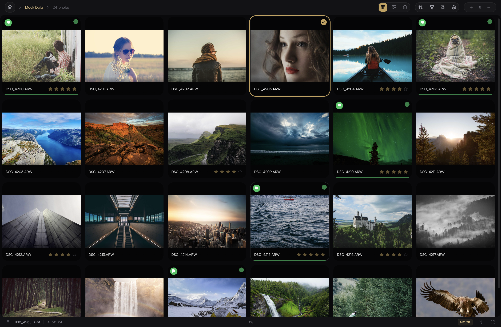
A place for the whole first pass
From the memory card to the Lightroom handoff, keep the decisions moving in one desktop app.
Bring it in
Use Card Manager to review and copy memory cards to your chosen destinations. Open folders of RAW photos and common image files.
Find your keepers
Move between grid, scenes, and single-image review. Inspect faces, focus, and eye status; use stars, color labels, and pick/reject flags to narrow the shoot.
Keyboard navigation · Filters & sorting · Find by filename
Prepare the details
Crop and straighten before your Lightroom pass. In Remove mode, brush distractions, review auto-mark suggestions, and group touching marks into a single removal.
CullThing saves the instructions to XMP. Lightroom Classic generates the removal result.
Review and workspace screenshots
Pick a layout for the way you review. Keep the controls within reach, inspect the details, or clear the screen for the photograph.
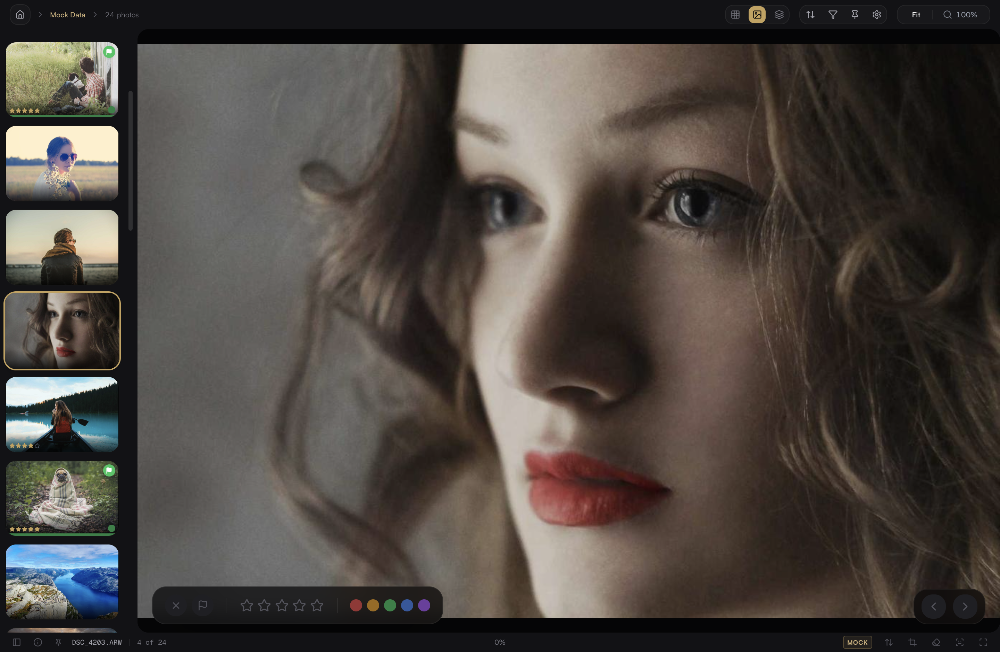
Keep neighboring frames in a vertical filmstrip, with the floating rating and flag bar and separate navigation buttons within reach.
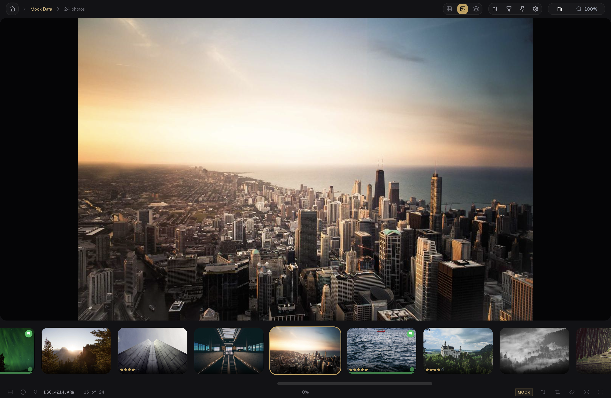
Switch to a horizontal filmstrip. This view has the floating action bar and navigation buttons switched off, leaving the image clear.
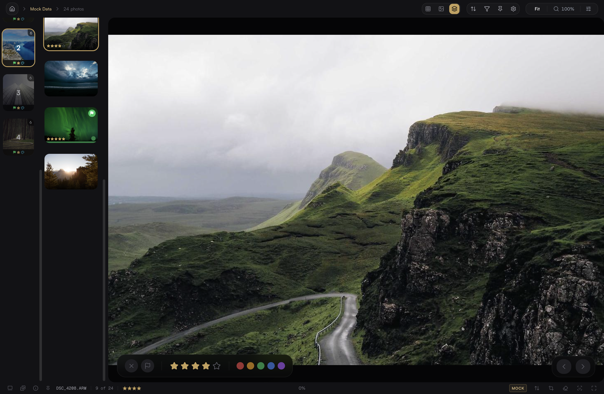
The scene navigator groups the shoot into moments; the neighboring strip shows the frames in the selected scene. Move between moments without losing your place.
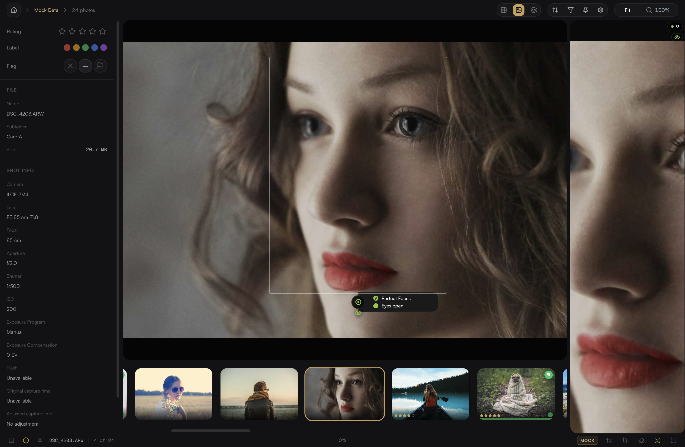
Inspect the magnified face panel, the focus score, and eye status together. The info panel on the opposite side shows ratings, labels, camera, lens, exposure, and capture information. Eye status appears after Analyze Eyes.
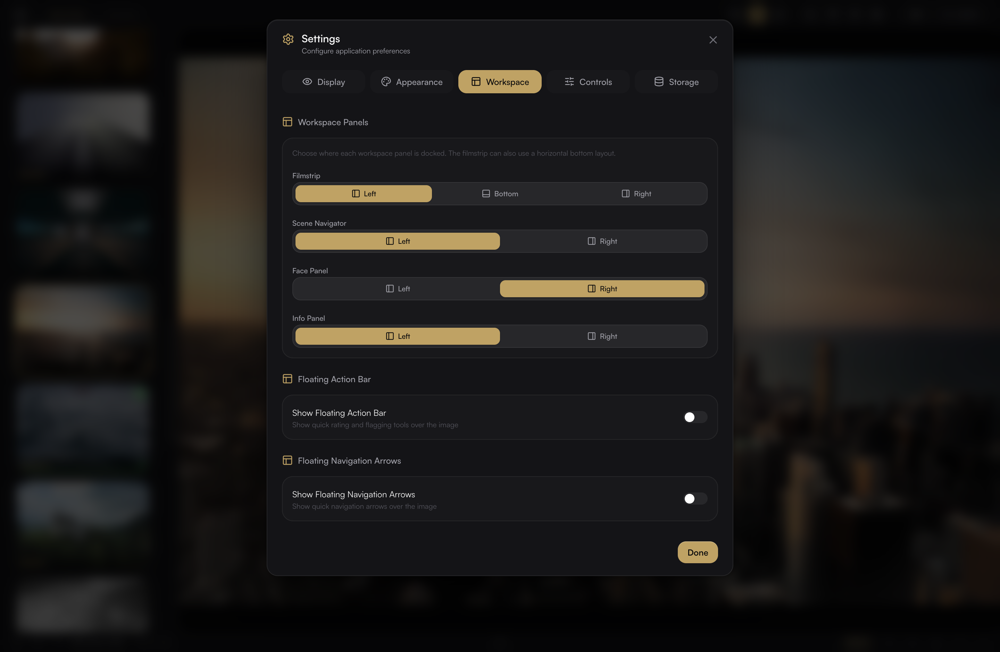
Dock the filmstrip left, right, or along the bottom. Move the scene navigator, face panel, and info panel to either side; show or hide floating action and navigation controls.
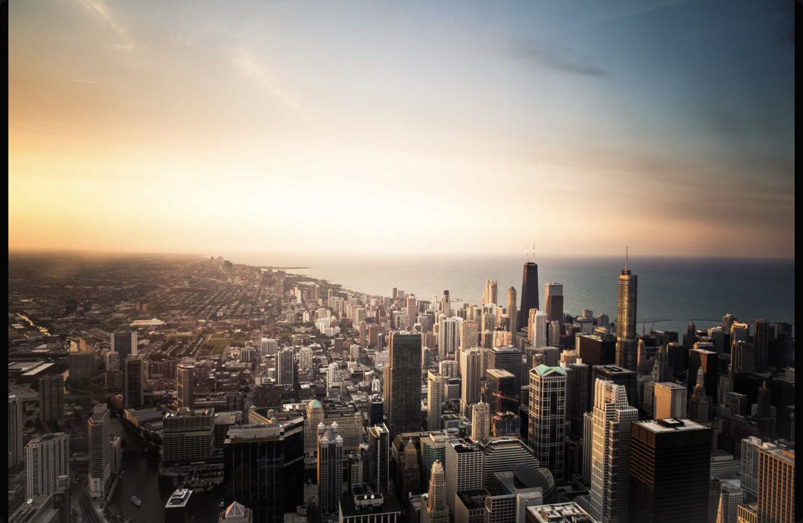
Hide the filmstrip and panels, switch off the floating controls, and hide the interface bars. Top and status bars can also auto-hide and reappear at the screen edge.
Photo tool screenshots
Prepare the framing and the cleanup while you are still reviewing. Crop and level adjustments stay in metadata; Lightroom Classic generates Remove results and expanded edges.
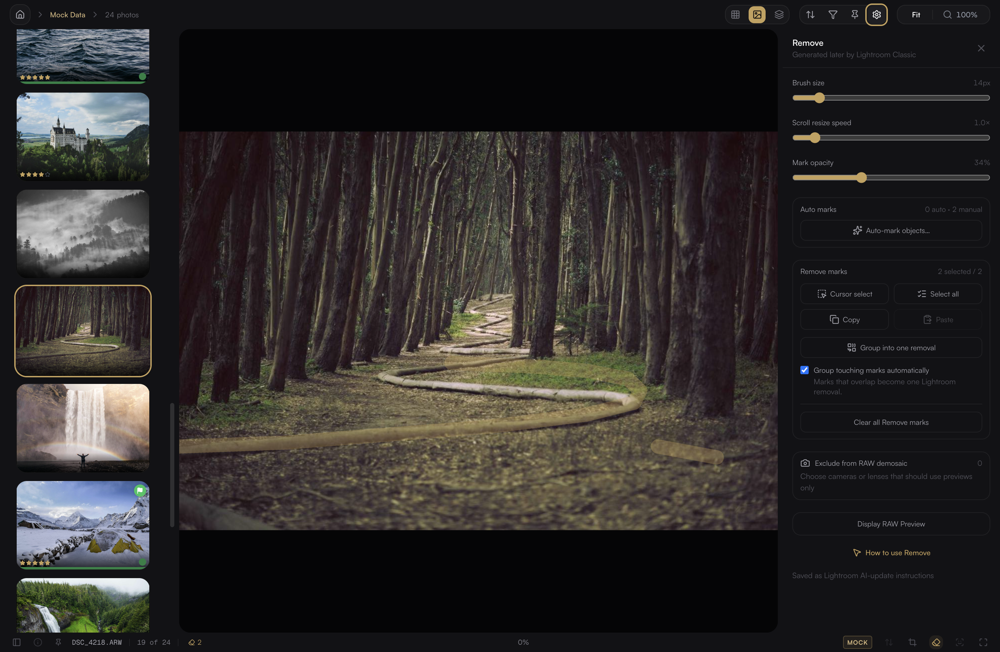
Brush, select, copy, paste, and group Remove marks while the filmstrip stays available. Adjust brush size, scroll resize speed, and overlay opacity; touching marks can become one removal automatically.
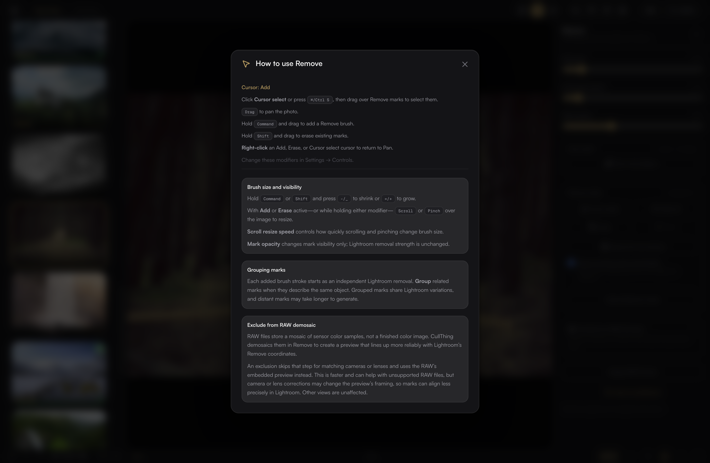
Switch between Pan, Add, and Erase, or stay in Pan and use the configured modifiers to brush and erase. Resize with the wheel, pinch, or shortcuts. The in-app guide explains selection and grouping; modifiers are configurable.
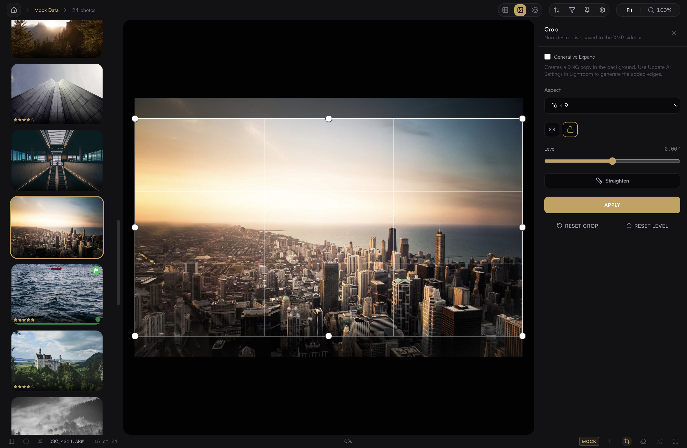
Use aspect presets, lock the ratio, flip the orientation, and drag the crop handles with a composition grid. Apply the crop to XMP without replacing the original photo.
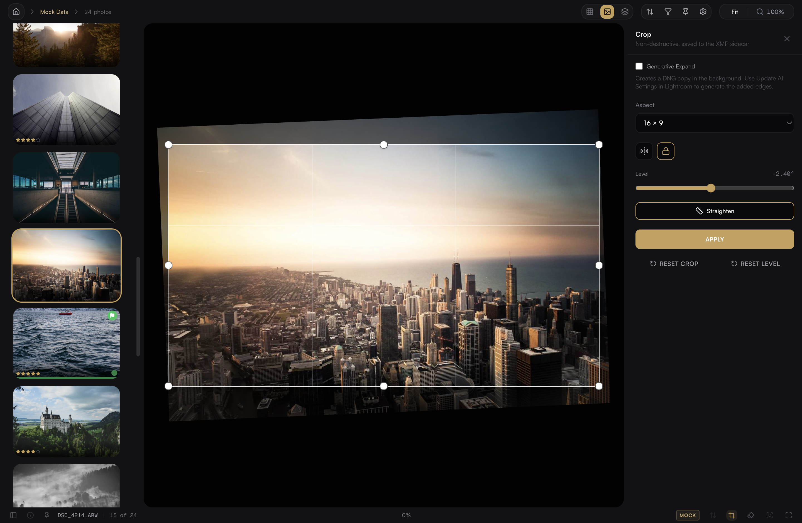
Use Straighten for an automatic angle, adjust the Level slider yourself, and reset the crop and angle independently. The example shows a demo angle with the crop kept inside the rotated photo.
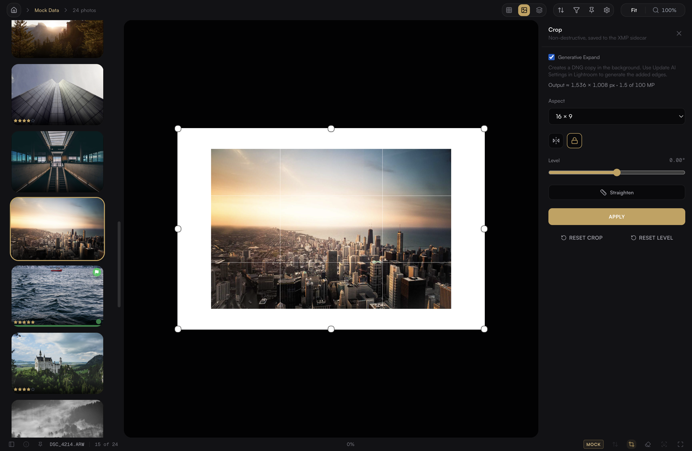
Extend the frame beyond the original boundaries with Generative Expand. CullThing prepares a DNG copy; use Update AI Settings in Lightroom to generate the added edges. The white border shown here is the area awaiting generation.
Meet EditThing
Give the whole shoot a starting edit, then make the finishing touches your own.
Start with an Instant profile from a preset, or a Personal profile trained on your own edits. Try it on a few copies first, refine it with feedback from Lightroom, and apply it across the shoot.
Processing happens locally. First-time setup downloads models and requires Adobe DNG Converter.
EditThing screenshots
Choose how EditThing learns your look, keep shoots organized as projects, and confirm the changes it detects from your Lightroom trial edits.
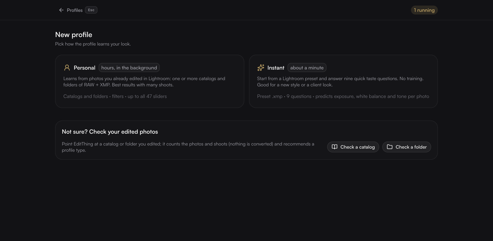
Instant starts with a Lightroom preset and nine taste questions. Personal learns from your edited catalogs or RAW + XMP folders. If you are unsure, EditThing can inspect your edited photos and recommend a profile type.
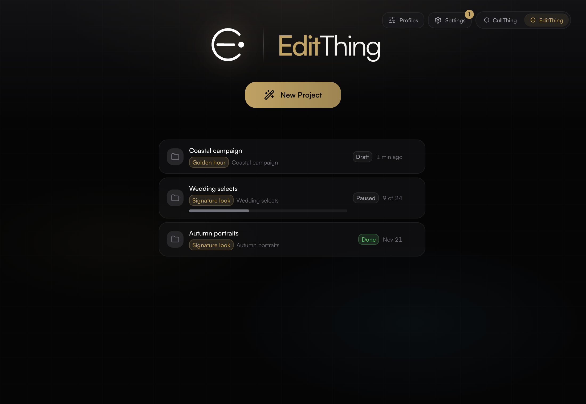
See the profile assigned to each project and which shoots are drafts, paused, or done. Open a project to continue editing; pause and resume work when you need to.
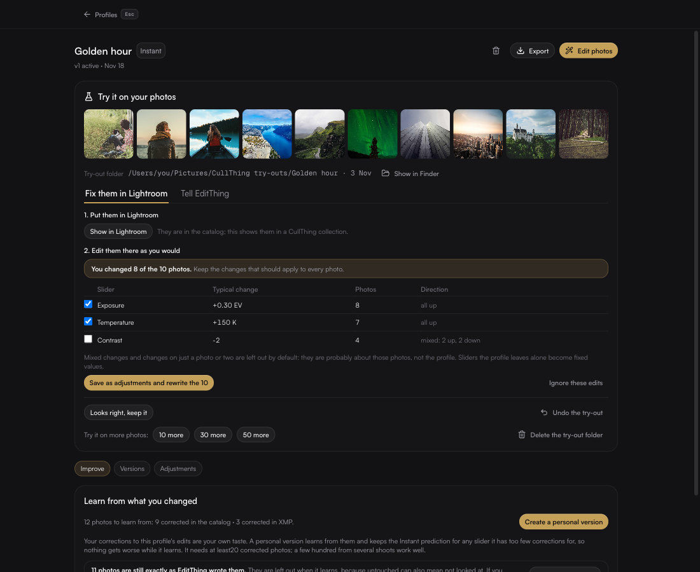
While the trial panel is open, EditThing watches the trial edits. With the Lightroom plug-in connected, it reads the changes without a separate XMP save. Consistent changes are preselected; mixed changes stay unchecked. Review the detected shifts, then confirm Save as adjustments and rewrite. This screen uses illustrative demo changes.
Keep your workflow
Ratings, labels, crops, and Remove instructions travel in XMP sidecars. EditThing can write develop settings to sidecars or work with an open catalog using the included Lightroom Classic plug-in.
Turn on Remote Access and pair a phone or tablet on the same network. Browse and cull a project or your library from that device's browser while the desktop hosts it.
Your next shoot starts here
Official desktop builds. Currently available for limited testing.
Latest published stable release
A little help getting started
Current test builds are ad-hoc signed and are not yet notarized by Apple.
Only approve a copy downloaded from the official release repository. The Open Anyway button is available for about an hour after the blocked launch. Full instructions & troubleshooting
Run the x64-setup.exe installer. Current test builds are not Authenticode-signed. If Microsoft Defender SmartScreen warns you, select More info, verify it is CullThing from this official repository, and select Run anyway.
The installer installs for your current Windows user. Full Windows instructions
Choose Check for Updates… from the application menu. The app prompts before installing an update and verifies the updater's cryptographic signature. You can also download the newest installer above.
Install Adobe DNG Converter and complete the model download during first-time setup. Start with a Lightroom preset for an Instant profile, or your edited photos for a Personal profile. Lightroom Classic is used to continue editing and to generate Remove results.